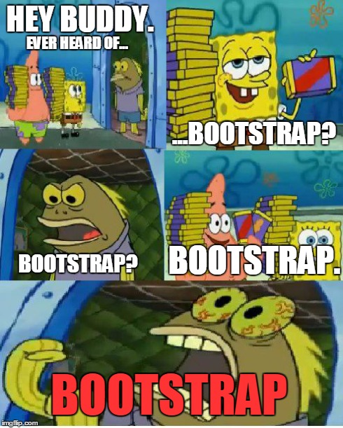

What is a UI framework? It is a collection of pre-built components, libraries, and design elements. It is used to create the skeleton of a modern UI website and help developers build a website faster and easier. It is a collection of HTML, CSS, and JavaScript. There are a bunch of UI frameworks out there including Bootstrap, React, Angular, and many more. Users today prefer a framework that is clean, interactive, and simple for a seamless user experience. I’ve recently learned how to use Bootstrap and learned that it is one of the most popular UI frameworks out there. It is a free and open-source CSS framework directed at responsive, mobile-first front-end web development. It contains cascading style sheets that is used to provide an attractive look-and-feel to the website and can specficy a wide range of visual styles that includes the font, colors, margins, and more. For those that are wondering the difference between UI and UX. UI is how users interact with the system such as buttons, icons, and navigation bars. While UX on the other hand is how the system works and the overall experience with the product or service. If you’re wanting to start going beyond CSS and HTML, I would recommend using Bootstrap because in my opinion its a user-friendly web UI framework to use that has ready-to-use components that can help you get started and apply it to your own UI design.
User interfaces play an important role in any web application. They are used by front-end developers to create the look and appereance of a website. It is a backend-developers best friends. When using UI frameworks like bootstrap for example designers can write in thei HTML code with the relevant CSS classes and try to make the website interactive with the user. There are many benefits of using frameworks such as:
I am a sucker for beautiful UI designs and obsessed with trying out all kinds of CSS framworks. A website I like to look at for web design inspiration is www.awwwards.com. It recognizes the creativity and talent that developers are capable of. People can be able to sumbit their work on the website for the whole world to see and can get special awards while gaining recognition. Although it took me sometime to learn the basics of Bootstrap and how to use it, I find it very fun because it allows the the developer to become very creative. The many benefits that I’ve listed above are just a few things why many people prefer to use UI frameworks than just raw HTML and CSS. It makes developers life much easier. I am excited to learn more about UI frameworks and how to use them to create beautiful websites.